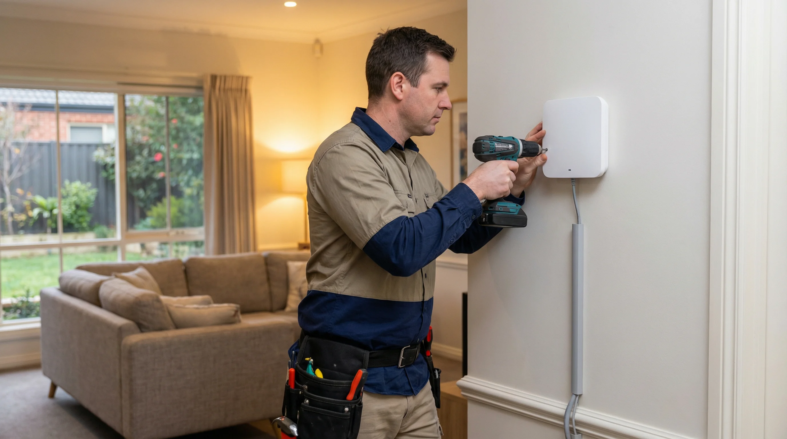

WiFi Range Extension on the Gold Coast — What You Need to Know First
WiFi range extension is one of the most common requests we get from Gold Coast homeowners, and it's easy to understand why. Modern homes are bigger than they used to be. Granny flats, double-storey layouts, large backyards and garages have all become standard across suburbs like Robina, Helensvale and Coomera — and a single router placed near the NBN connection point simply cannot cover all of it. The problem is not always the router itself. Sometimes it's the building materials, the layout or the distance. Before spending money on hardware, it's worth understanding what's actually causing the dead spot and which solution will fix it properly.
The WiFi signal your router broadcasts operates on radio frequencies — primarily 2.4 GHz and 5 GHz. The 5 GHz band carries more data and is faster over short distances, but it doesn't pass through walls and floors nearly as well as 2.4 GHz. Thick concrete walls, brick construction and steel-framed homes — all common in Gold Coast builds — absorb and reflect these signals. A room that's only 10 metres from the router can have almost no usable signal if there are two brick walls and a floor in between. This is why moving the router a metre to the left rarely solves the problem, and why a plug-in extender placed halfway between the router and the dead spot often creates more issues than it fixes.

Why Cheap Plug-In Extenders Cause More Problems Than They Solve
Walk into any electronics retailer and you'll find a shelf of plug-in WiFi range extenders priced between $40 and $150. They're marketed as an easy fix — plug it in halfway between the router and the dead spot, and the signal reaches further. In practice, they introduce a set of problems that most people don't discover until after they've bought one.
The biggest issue is bandwidth halving. A wireless extender has to receive the signal from your router and then rebroadcast it, and it does both of these things on the same radio. That means every packet of data is transmitted twice — once from the router to the extender, and again from the extender to your device. The practical result is that your effective speed in the extended area is roughly half of what the extender itself receives. If your router delivers 200 Mbps to the extender, your device connected to the extender gets around 100 Mbps at best. In a household where multiple people are streaming, video calling or working from home, that halving is noticeable.
The second issue is network fragmentation. Most plug-in extenders create a separate network name — for example, your main network might be called "HomeWiFi" and the extender creates "HomeWiFi_EXT". Your devices don't automatically switch between them. A phone that connected to the extender network in the bedroom will stay connected to it even when you walk back to the lounge room, where the main router signal is far stronger. This is called "sticky client" behaviour, and it means you end up with a slower connection in rooms where you should have a fast one. It's a frustrating problem that's difficult to diagnose if you don't know what to look for.
Extenders also add latency. Every hop between your device and the router adds a small delay. For most web browsing this is imperceptible, but for video calls, online gaming or remote desktop connections — all common uses in Gold Coast home offices — that added latency is noticeable. A wired access point, by contrast, adds almost no latency at all because the data travels over Ethernet rather than being retransmitted wirelessly.
Wired Access Points — The Right Solution When You Have Ethernet
If your Gold Coast home has Ethernet cabling already run to the problem area — or if a cable can be run — a wired access point is the best solution available. A wired access point connects to your router via an Ethernet cable and broadcasts its own WiFi signal in the area where coverage is needed. Because it's connected by cable, it doesn't suffer from the bandwidth halving that affects wireless extenders. It delivers the full speed of your connection to devices in the extended area.
When configured correctly, a wired access point uses the same network name and password as your main router. Your devices roam between the router and the access point automatically, connecting to whichever one has the stronger signal. This is called seamless roaming, and it's what most people expect from their WiFi — they just don't realise their current setup doesn't do it. A properly configured access point in the back bedroom of a Burleigh Heads home, for example, means a phone call started in the kitchen continues without interruption as you walk to the back of the house.
The access point itself is a relatively small, wall-mounted device. It draws power either from a separate power adapter or — more commonly in modern installations — from the Ethernet cable itself via Power over Ethernet (PoE). A PoE-capable switch or injector at the router end sends power down the same cable that carries the data, which means no separate power point is needed at the access point location. This makes installation cleaner and more flexible, particularly in areas like garages, hallways and outdoor-covered areas where power points may not be conveniently located.